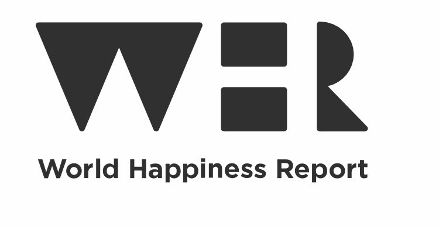
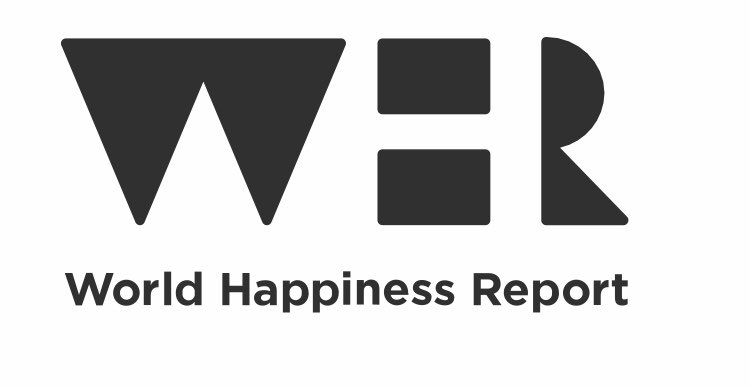

Live, Laugh, Love
I'm a Data Analyst based in Bristol, and I thrive in team-based settings. I've developed my skills through working in
collaborative environments, where I make sure everyone on the team feels appreciated as we meet our shared goals.
Currently, I'm a part of the Global MDM team at Accolade Wines, where I support many aspects of the business
in achieving their objectives.
 

In this project, I analysed the World Happiness Report from 2015 to 2023. I focused on correlating happiness levels with metrics from the report to gain insights into the factors influencing happiness trends, contributing to a comprehensive understanding of the dynamics shaping the well-being of nations over the specified period.

In this project, I delved into A/B testing to ascertain the broader implications of alterations observed following the introduction of a new landing page on user behaviour. Specifically, the focus was on evaluating the impact on conversion rates and average spend, aiming to discern whether the observed changes were indicative of patterns within the larger user population.

In this project, I employed two methodologies, namely Ranked Distributions of perks and Machine Learning Clustering, to categorise users into specific reward segments according to their past interactions on the platform. The overarching goal was to strategically encourage their participation in the business's rewards program by tailoring offerings based on their unique behavioural patterns.
In this project, I undertook an analysis of customer activity within a ride-share business akin to Uber. Identifying distinct stages within the customer journey, I found areas exhibiting noteworthy drop-off rates. Subsequent to identifying these vulnerable segments, I offered recommendations, grounded in the analytical findings, outlining strategies to mitigate drop-offs in the vulnerable areas.

This Tableau project simplifies the analysis of TFL Bikeshare Bikes' yearly ride patterns, emphasizing user-friendly dashboards for stakeholders. By distilling complex data on seasonal and event-driven variations, the visualizations highlight key trends, enabling decision-makers to make informed choices. The focus is on creating an accessible tool that empowers stakeholders to optimize bike share usage, enhance user experience, and ensure operational efficiency throughout the year.

I delved into a captivating SQL project, adopting the mantra of "Solving crime one query at a time." focused on unmasking a mysterious murderer. Transforming the data using SQL into a tool for unraveling hidden connections in the case, each SQL query not only revealed further insights into solving the crime but also unveiling a complex tapestry of motives and a collaborative network...